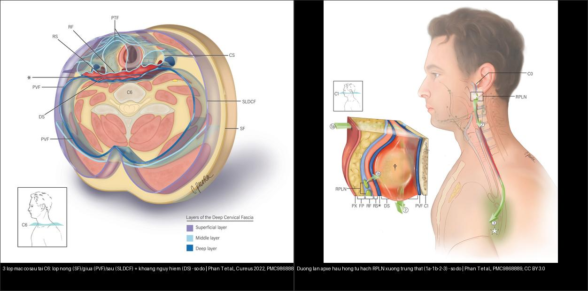
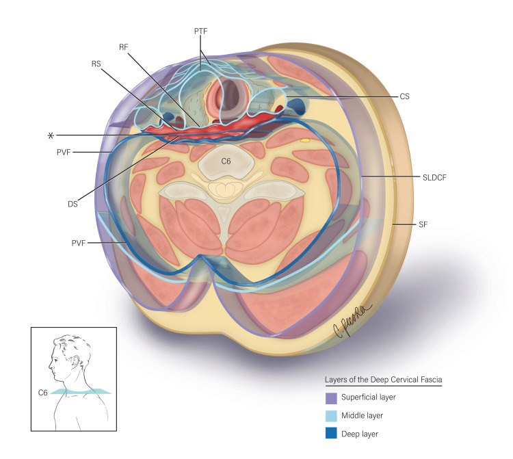
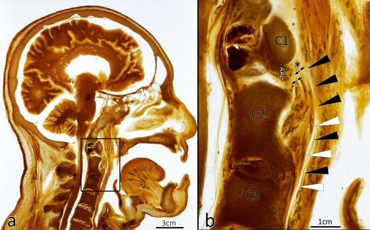
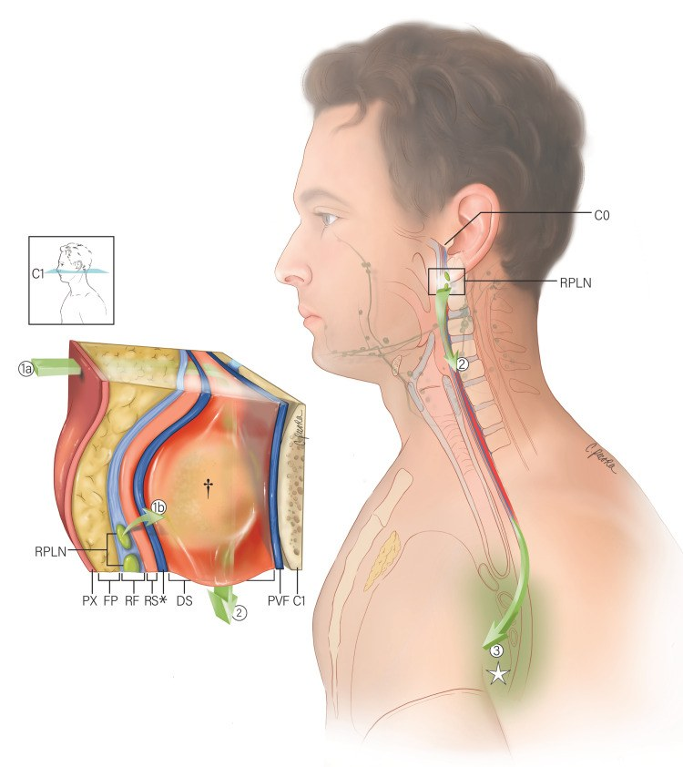

700 — Tổng quan Đầu Mặt Cổ & mạc cổ sâu / Head & Neck overview
Tags: tong-quan
Mức chắc chắn (certainty): tổng hợp y văn (literature synthesis).
Học thuyết cốt lõi: véc-tơ đẩy mạc cổ (hướng đẩy của mỡ khoang bên hầu + ICA định khu khoang) & thanh thải nhầy – lan thần kinh (PNTS). Bài 230 (TI-RADS tuyến giáp) giữ nguyên dải 200 — xem 230 – Tuyến giáp.
Bảng so sánh phân biệt bắt buộc (Đầu Mặt Cổ)
| Mẫu hình (pattern) | Vị trí (location) | Gamut chính (DDx) | Phân biệt nhanh (Chốt định lượng / Tín hiệu) | Bài chi tiết |
|---|---|---|---|---|
| Tắc phức hợp lỗ ngách (OMC) & Dày niêm mạc | Mũi xoang (sinonasal) | Viêm xoang, nấm (mycetoma > 70 HU), polyp, u | Keros I 1–3 mm / II 4–7 mm / III 8–16 mm; Onodi/Haller; nấm > 70 HU + black turbinate = Mucor xâm lấn | 710, 715 |
| Mờ xương đá & Nghe kém dẫn truyền | Xương đá (temporal bone) | Viêm tai, cholesteatoma, hở ống bán khuyên (SSCD), viêm xương chũm biến chứng nội sọ, viêm tai ngoài ác tính/viêm xương nền sọ | Mòn scutum + Prussak; non-EPI DWI (+) ≥ 2–3 mm = cholesteatoma (mô hạt âm); Pöschl/Stenvers cho SSCD; mòn vách xoang sigma + khuyết thuốc MRV = OLST; ĐTĐ + mô hạt ống tai + mòn xương nền sọ + liệt dây sọ = NOE | 720, 236, 233 |
| Trẻ liệt mặt ngoại vi + nghe kém, màng nhĩ liền | Đỉnh xương đá – thượng mê đạo (petrous apex) | Cholesteatoma xương đá (Sanna I–V) · u hạt cholesterol · dịch kẹt · viêm đỉnh xương đá (Gradenigo) · schwannoma VII · chondrosarcoma | DWI sáng + ADC tối (759–1.370 ×10⁻⁶ mm²/s) + T1 tối = cholesteatoma; T1 sáng không tiêm = u hạt cholesterol; không tiêu xương + T2 sáng + DWI tối = dịch kẹt; liệt mặt < 12 tháng còn cửa sổ hồi phục dây VII | 1713 |
| Tai chảy mủ mạn + trẻ có/ chuẩn bị cấy ốc tai (CI trong tai có bệnh) | Xương thái dương: thượng nhĩ – sào bào – ốc tai | Cholesteatoma mắc phải/ bẩm sinh · viêm tai giữa mạn · u hạt cholesterol · mô hạt viêm · cholesteatoma xương đá · áp-xe Bezold | Mờ HOÀN TOÀN sào bào trên HRCT → phải CWD/STP (5/5), sào bào thông khí → CWU (7/7); vôi hóa ốc tai độ I–III (độ I: > 4 mm cửa sổ tròn; III: > 180°, dài ≥ 8 mm = tắc nặng); có nam châm → DWI mất giá trị, theo dõi bằng CT 6 tháng/1-3-5-10 năm | 1704 |
| Trẻ điếc tiếp nhận nặng–sâu sau nhiễm trùng bào thai (CMV/rubella) — có cấy ốc tai được không? | Tai trong – ốc tai – ống tai trong – dây thần kinh VIII | Điếc do cCMV/rubella (tai trong bình thường) · bất sản phần II (IP-II) · giảm sản ốc tai (CH) · thiếu sản/bất sản dây thần kinh ốc tai · xơ hóa mê nhĩ sau viêm màng não · ống nội dịch rộng (EVA) | MRI 3T CISS bắt buộc: không thấy dây thần kinh ốc tai → ABI, không cấy ốc tai; IAC < 3 mm + VCN/FN thấp = thiếu sản dây thần kinh**; **EVA > 1,9 mm ở operculum (hoặc > 1,5 mm điểm giữa) = nguy cơ gusher dịch não tủy; cấy trước 18 tháng → phát triển ngôn ngữ tốt hơn; sàng lọc sơ sinh qua không loại trừ (13,9% trẻ cCMV điếc muộn) | 702, 6128, 6102, 720 |
| Chảy mủ tai + đau tai tái diễn 5–20 năm sau xạ vòm họng, xương trắng lộ trong ống tai | Xương thái dương: ống tai ngoài – xương nhĩ – chũm – nền sọ bên | Hoại tử xương do xạ · tái phát ung thư · viêm tai ngoài ác tính · cholesteatoma ống tai sau xạ · MRONJ ống tai · viêm tai giữa ứ dịch do xạ | Tiềm tàng 8–10 năm (tới 22), liều 53,1 Gy xương thái dương / 65,2 Gy xương nhĩ; xương lộ > 3 tháng = hoại tử xương; Ramsden khu trú 76% / lan tỏa 24% → 37% lúc theo dõi; lan ngoài chũm → bảo tồn luôn thất bại; cholesteatoma ống tai 18×, 6,5 năm; liệt mặt 2,9% | 3104 |
| Liệt dây thần kinh sọ + sưng cổ sau viêm tai/họng | Đỉnh xương đá – ống Dorello – TM cảnh trong | Gradenigo (VI) · liệt VII do AOM · viêm mê nhĩ · Lemierre (IX–XII, huyết khối IJV) | Tam chứng Gradenigo đầy đủ chỉ 22%, viêm đỉnh xương đá 1/50.000 trẻ AOM → CT 0,5–1 mm + MRI T1+C; huyết khối IJV + nốt phổi ngoại vi = Lemierre (3,6/triệu/năm, Fusobacterium 72,3%) | 237, 238, 236, 730 |
| Đau đầu/đau cổ + tủy xương clivus bất thường | Nền sọ GIỮA (clivus, lồi cầu chẩm) | Viêm xương nền sọ giữa (CSBO) · NPC · chordoma/chondrosarcoma · di căn/myeloma · IgG4 · nấm · lao | CSBO: MRI T1 tối + ngấm thuốc, CT có thể BÌNH THƯỜNG, CRP/ESR cao, liệt dây sọ 82%; NPC: khối vòm Rosenmüller + hạch cổ + EBV; chordoma: T2 rất sáng, đường giữa; IgG4: đối xứng, đáp ứng corticoid | 253, 233, 730, 750 |
| Sưng cổ cấp + Sốt (Deep neck infection) | Khoang cổ sâu (deep neck) | Áp-xe vs viêm mô tế bào, khoang nguy hiểm vs trước sống | Sau hầu < 7 mm (C2) / < 14–22 mm (C6); danger space xuống trung thất; phù dẹt không viền = không mổ | 730 |
| Khối tuyến mang tai (Parotid mass) | Tuyến nước bọt (salivary) | Pleomorphic adenoma, Warthin, ác tính | T2 sáng như dịch + ADC > 1,5 = pleomorphic; bắt sớm-thải nhanh = Warthin; T2 đen + ADC < 1,0 + tua gai = ác | 740 |
| Khô miệng tiến triển ở bệnh nhân ung thư tuyến tiền liệt đang trị liệu PSMA | Tuyến nước bọt: mang tai – dưới hàm – dưới lưỡi | Khô miệng do ²²⁵Ac (alpha) · ¹⁷⁷Lu (beta) · tandem · xạ trị đầu cổ · thuốc kháng cholinergic/opioid · Sjögren · mất nước/đái tháo đường · nấm miệng | Khô miệng sau chu kỳ 1, nặng dần, không hồi phục + đang ²²⁵Ac = alpha (79,3–100%); xạ hình: EF giảm, Umax còn; SUVmax tuyến −63,7% sau 2 chu kỳ; ngừng thuốc 2–4 tuần không đỡ → loại nguyên nhân thuốc | 1838 |
| Hạch cổ to (Neck nodes) | Cổ I–VII (neck levels) | Viêm, di căn (ENE), lymphoma, lao | Nhóm II > 15 mm, khác > 10 mm, Rouvière > 5–8 mm; ENE = ngoại khoa; NI-RADS 1–4 sau điều trị | 750, 230 |
| Bướu cổ thòng trung thất + khó thở khi nằm (retrosternal goiter) | Tuyến giáp – trung thất trước–trên – khí quản | Bướu giáp thòng thứ phát · mô giáp lạc chỗ nguyên phát · thymoma · lymphoma · teratoma · phình mạch | > 50% tuyến dưới eo trên hoặc đuôi > 3 cm dưới khuyết ức; đậm độ 70–120 HU + liên tục cổ + vôi hóa thô; chèn khí quản 48,6%, lệch 60,6%, ung thư 12,4%; mở xương ức khi đuôi ≥ 5 cm (Se 94%/Sp 86,5%), dài ≥ 66 mm, thể tích ≥ 162 cm³; tracheomalacia 1,4% | 972, 940, 941, 093 |
| Khối đáy lưỡi ĐƯỜNG GIỮA + "tuyến giáp rỗng" ở cổ (lingual thyroid) | Đáy lưỡi – ống giáp–lưỡi (foramen caecum) | Bướu giáp lạc chỗ · nang ống giáp–lưỡi · phì đại amidan lưỡi · hemangioma/lymphangioma · u tuyến nước bọt phụ · SCC/lymphoma · dermoid/teratoma · u hạt tế bào | Tăng đậm trên CT không cản quang 60–120 HU + KHÔNG thấy tuyến giáp ở cổ + uptake 99mTc/I-123 tại đáy lưỡi = bướu giáp lạc chỗ; > 70% là tuyến giáp DUY NHẤT → xạ hình TRƯỚC sinh thiết/cắt; ung thư < 1%, vôi hóa không = ác tính; dịch tễ 1/100.000–1/300.000, nữ 70–80% | 1899, 1952, 230, 1815 |
| Nang giáp có triệu chứng (Cystic thyroid nodule) | Tuyến giáp (thyroid) | Nang thuần/nang ưu thế dịch · nang keo đặc · nang xuất huyết · ung thư có thành phần nang · nang giáp lưỡi | Dịch > 50% thể tích + FNA lành tính; VRR > 50% = thành công; nang một thùy đáp ứng tốt hơn; khàn tiếng 0,53%, chưa có liệt dây thanh vĩnh viễn | 1622, 230 |
| Cường giáp do amiodarone (AIT) — type 1 vs type 2 | Tuyến giáp: nhu mô ± nhân, STA/ITA | AIT type 1 (tăng tổng hợp do iod) · AIT type 2 (viêm hủy) · AIT mixed/không xác định · Graves · viêm giáp bán cấp · giả cường giáp do hormon | Doppler "inferno" + PSV STA > 100 cm/s + 99mTc bắt xạ tăng = type 1; vùng giảm hồi âm/giảm mạch + PSV < 45–50 cm/s + mất bắt xạ = type 2; FT3/FT4/TSH KHÔNG phân biệt được (36,7 vs 38,71 pmol/L); bể iod làm RAIU thấp ở cả hai type → không chốt bằng 131I; type 1 dùng methimazole 40–60 mg/ngày ± perchlorate ≤ 1 g/ngày ≤ 4–6 tuần, type 2 dùng prednisone 30–40 mg/ngày; cắt giáp khi kháng trị/LVEF < 40% | 968, 1898, 940 |
| Cường giáp khởi phát cấp sau cản quang iod (sốt, nhịp nhanh, run, sụt cân) | Tuyến giáp (thyroid) | Jod–Basedow · Graves · viêm giáp bán cấp/Hashitoxicosis · nhân độc tự trị · cường giáp do amiodarone | Mốc phơi nhiễm iod + TSH bị ức chế + TRAb âm + tuyến KHÔNG đau = Jod–Basedow; siêu âm bình thường KHÔNG loại trừ (ca 17 tuổi: fT4 7,4 ng/dL, TSH < 0,0008); xạ hình/RAIU sau cản quang = âm giả → hoãn; 78 mL Omnipaque 300 ≈ 23 g iod (~21.000 × mức chịu đựng 1.100 µg/ngày); BWT ≥ 45 = bão giáp | 1898, 940, 230 |
| Dị dạng mạch máu & u mạch máu đầu–cổ ở trẻ (Vascular anomalies) | Da–mô mềm–khoảng cổ–hốc mắt–đường thở | IH, CH, LM, VM, AVM/AVF, KHE | IH đoạn mặt > 5 cm → PHACE (MRI/MRA não–cổ, tim, mắt, đường thở); LM: T2 rất sáng, không flow; VM: sỏi tĩnh mạch, ngấm chậm; AVM: flow void + nidus + dẫn lưu sớm; IH đoạn cùng cụt vắt đường giữa → LUMBAR | 741, 746 |
| Há miệng hạn chế (MIO ≤ 35 mm) sau xạ đầu cổ | Khớp thái dương hàm – cơ nhai (khoang nhai) | Xơ hóa cơ nhai do xạ (RIF) · tái phát u khoang nhai · ORN xương hàm · áp-xe răng · rối loạn khớp thái dương hàm | Teo + ngấm thuốc cơ đúng trường xạ, KHÔNG khối = RIF; masseter Dmean ≥ 37,5 Gy → trismus 45,7% vs 11,9% (HR 4,89); ADC masseter > 1.381 ×10⁻⁶ mm²/s → 71,4% vs 6,1% (HR 11,17); khối + xâm lấn mỡ cạnh hầu + hạch mới = tái phát → sinh thiết, không sinh thiết mù trong mô xạ | 1761 |
| Tê/đau vùng V3 + teo cơ nhai một bên sau xạ | Thần kinh sinh ba V3: Meckel's cave – lỗ bầu dục – khoang nhai | Bệnh thần kinh V3 sau xạ · u lan theo dây (NPC/ACC/SCC da) · u nền sọ tại lỗ bầu dục · bệnh thần kinh vận động V3 · sau mổ răng/ORN | Teo mỡ ≥ 2 cơ V3 + dây ngấm thuốc nhẹ + KHÔNG khối/không giãn lỗ + DWI không hạn chế = xạ; dây dày/ngấm mạnh + giãn lỗ + ADC tối = u lan theo dây → sinh thiết ổ u; tiềm tàng trung vị 7,6 năm, nguy cơ 44,5% ở 20 năm (xạ quy ước); V3 Dmax 66 Gy / D1cc 62,7 Gy là vùng cảnh báo | 1764 |
| Teo nửa lưỡi + lệch lưỡi về bên liệt sau xạ | Thần kinh hạ thiệt XII: hành não – bể não – ống hạ thiệt – khoang cảnh sau – sàn miệng | Bệnh thần kinh XII sau xạ · tái phát/u lan theo dây (NPC) · u trong ống hạ thiệt · bóc tách ICA · di căn lồi cầu chẩm · ALS/Kennedy · Tapia · chấn thương/sau mổ | Teo MỠ nửa lưỡi (T1 sáng, mất tín hiệu fat-sat) + KHÔNG khối + ống hạ thiệt nguyên vẹn = xạ; XII là dây hay bị nhất: 30/36 ca (83%); D1cc < 74 Gy EQD2 → 2,4% vs 20,8% (AUC 0,826); lưỡi lệch VỀ BÊN LIỆT (UMN lệch bên đối diện); khối/xói ống/ADC tối = u, không phải xạ | 1765 |
| Cổ đông cứng + mở miệng hạn chế + ngửa cổ hạn chế sau xạ (đường thở khó) | Đường thở trên: miệng – họng – thanh môn – khí quản cổ, mô mềm cổ trước | Xơ hóa mô mềm + trismus + phù thanh môn do xạ · tái phát u/hẹp thanh môn · hẹp khí quản sau mở khí quản · cổ cứng không do xạ (dính khớp) · tắc tĩnh mạch cảnh trong | ORN-DAS ≥ 4 = nguy cơ cao (ORN 1 + MIO < 3 cm 2 + Mallampati III/IV 1/2 + hạn chế ngửa cổ 1 + tiền sử khó 1; AUC 0,76; PPV 64,3%); đèn trực tiếp FPS 54,2% ở ORN vs 79,5%; FOI 28,8% vs 9,4%; video 100% ở ca được chọn; mô xơ T2 thấp, ADC không giảm, không khối = xạ, khối + ADC thấp = tái phát | 1768 |
| Cần mở khí quản / FONA ở cổ đã xạ (không đặt được nội khí quản) | Cổ trước: da – mô mềm trước cổ – màng giáp nhẫn – sụn nhẫn – khí quản cổ | Xơ hóa + sụn vôi hóa · phù thanh môn · liệt hai dây thanh sau xạ · hoại tử sụn thanh quản do xạ (LCRN) · hẹp sau mở khí quản · khí quản lệch | Màng giáp nhẫn 8,7 → 7,5 mm, da–màng 11,7 → 10,2 mm (231 ca xạ); CICO: scalpel-bougie oxy hóa 83% vs cannula 18% (lợn béo); cricothyroidotomy chuyển tiếp → hẹp 1 năm 13,0%; chỉ 9% ca mổ đầu cổ cần mở khí quản gây tê tại chỗ | 1769 |
| Phù mặt–cổ + đau đầu/ù tai/nhìn mờ sau xạ, tắc tĩnh mạch cảnh trong HAI BÊN | Tĩnh mạch cảnh trong hai bên – xoang màng não – tĩnh mạch cảnh ngoài | Hẹp/tắc IJV sau xạ + vét hạch · mảnh sinh lý · huyết khối IJV · chèn ép u/xương · tắc TM chủ trên · phù bạch mạch · huyết khối xoang màng não (CVST) | Bàng hệ + lỗ tĩnh mạch cảnh bất đối xứng phân biệt hẹp với mảnh (mảnh trái 48,4% người bình thường); CTV gọi tắc giả 4/4 nhưng DSV thông cả 4; stent: 127/144 (95,5%) thông ở 30,5 tháng, Frisén 2 → 1 | 1770 |
| Đau co thắt vùng mang tai đúng miếng ăn đầu rồi giảm khi nhai tiếp | Tuyến mang tai – chuỗi giao cảm cổ – động mạch cảnh trong | FBS · sỏi/viêm tuyến · hội chứng Frey · đau dây V3 (1764) · đau dây IX · rối loạn khớp thái dương hàm · tái phát u | 6,3% sau cắt tuyến mang tai, 8,45% sau mổ khoang mang tai, 8,5% sau mổ lỗ tĩnh mạch cảnh; khởi phát 2–6 tuần, cơn 3–10 giây; tự hết 6–20%, đỡ 69–82%, đau mạn 15–18%; botulinum toxin A ≥ 40 U: 8/8 cải thiện; KHÔNG khối trên MRI = FBS, có khối/dây dày/ADC tối = tái phát | 1766 |
| Cứng–dày mô mềm cổ + đau/hạn chế vai sau xạ | Mô mềm cổ: da – mô dưới da – cơ ức đòn chũm – mạc cổ – cơ thang | Xơ hóa do xạ (RIF) · tái phát u/hạch · phù bạch mạch · sẹo mổ cổ · hoại tử xương hàm · liệt cơ thang do dây XI | Dày da + mất lớp mỡ dưới da + teo cơ đúng trường xạ, KHÔNG khối = RIF; cơ ức đòn chũm 46,98 vs 28,10 kPa (người không xạ); da V15 < 20% / mô dưới da V15 < 25% nếu đã mổ, SCM V70 < 25% nếu không mổ; khối + ADC thấp/FDG dương = tái phát; vai: xạ đơn thuần 96,3 vs mổ + xạ 65,3 điểm UW-QoL | 1763 |
| Sưng mềm–ấn lõm vùng mặt/cổ sau mổ + xạ | Mô mềm ngoài: mi – má – dưới cằm – cổ – hõm trên đòn | Phù bạch mạch ngoài (thể B/C) · xơ hóa do xạ (D) · tái phát u/di căn da · viêm mô tế bào/áp-xe · tụ dịch sau mổ · tắc tĩnh mạch chủ trên · suy giáp · giả phình cảnh | Mềm + ấn lõm + giảm khi kê cao/băng ép + T2 sáng + KHÔNG khối = phù bạch mạch; rắn, không lõm, T2 thấp = xơ hóa (D); khối/lệch trục + ADC thấp/FDG dương = tái phát; 70% phù ngoài / 34% phù trong ở 360 ngày; Dmean level IV ≥ 58,7 Gy và level I–VII ≥ 58,6 Gy dự báo phù mặt ≥ 2; vòng cổ ICC 0,958–0,994 nhưng độ dày bì chỉ 0,136–0,354 | 1767 |
| Sau xạ đầu cổ: mệt – tăng cân – chậm chạp, TSH tăng | Tuyến giáp trong trường chiếu cổ (C5–T1) | Suy giáp do xạ · suy giáp trung ương sau xạ sọ–mặt · Hashimoto · nốt/bướu giáp · ung thư giáp thứ phát · tái phát u chèn ép | TSH + FT4 ở 6–12 tháng rồi hằng năm ≥ 5 năm; tỷ lệ 23–53%, các nghiên cứu lớn ~40–50%, tích lũy NPC 39,4/49,1/54,7% ở 3/5/7 năm, khởi phát trung vị 15,4 tháng; Dmean > 28–30 Gy, V40 > 49%, VS40 < 2,12 cm³; trẻ sống sót sau xạ: ung thư giáp 7,1% sau 9,7 năm, siêu âm 100% vs sờ 12,5%; TSH nhảy trong đợt xạ không dự báo (OR 0,96) | 3110 |
| Chảy máu cam nặng/tái diễn ở trẻ | Hốc mũi – mũi hầu | Chảy máu trước vô căn, JNA, HHT, rối loạn đông máu, giả phình cảnh trong/SPA, u mũi hầu | 90% trẻ chảy máu thể trước (Kiesselbach) → không cần chụp; nam 12–16 tuổi + một bên + giãn lỗ bướm–khẩu cái + blush DSA = JNA (nút mạch 24–48 giờ trước mổ, giảm tưới máu 86%); tái diễn + giãn mạch môi/lưỡi + tiền sử gia đình = HHT (tầm soát AVM phổi–não); vòng nối nguy hiểm: lỗ tròn, màng não giữa, sàng, hầu lên → bơm nhầm = mù/đột quỵ; trẻ có rối loạn đông máu: INR/aPTT bình thường KHÔNG loại trừ VWD, chỉ 4,9% phải truyền | 743, 744, 741, 249 |
| Răng cửa lung lay/lệch/mất sau ngã đập mặt | Răng cửa vĩnh viễn – ổ răng – xương ổ (hàm trên) | Luxation (concussion/subluxation/extrusive/lateral/intrusive) · avulsion · gãy chân răng · gãy xương ổ · răng bị hít vào đường thở | Khe PDL rộng = dấu hiệu sớm nhất; intrusion: men dưới mức răng bên + mất khe PDL, ngưỡng 3 mm / 7 mm; khô > 60 phút = PDL kém; 43,5% ca gãy hàm dưới có chấn thương răng → luôn cuộn xuống ổ răng trên CT | 747 |
| Đau hàm âm ỉ + sưng + rò mủ tái diễn ở người lớn (nghi viêm xương hàm) | Xương hàm dưới (thân/góc/ngành) > hàm trên; ổ răng nguyên phát | Viêm xương do răng (SCO) · hoại tử xương do xạ (ORN) · MRONJ · Garré · DSO/PCO · CRMO/SAPHO · lao hàm · nấm (hàm trên) · u lympho NK/T/SCC/LCH | Có ổ răng + xương chết (sequestrum) + cloaca + ngấm thuốc tủy = SCO; MRI phù tủy sau 1–2 ngày, nhưng phim chỉ thấy khi mất 30–50% khoáng (> 1 tuần); mạn = > 4 tuần; 87% phải mổ, 50% mổ ≥ 2 lần; không xương chết + không rò = PCO/DSO (NSAID trước, kháng sinh ít hiệu quả 10/17); ORN: xạ 1–3 năm, không khối mô mềm; MRONJ: bisphosphonate + xơ hóa KHÔNG tạo xương màng xương; rò không lành → sinh thiết (SCC 1,5–2%) | 751, 749, 747, 730 |
Hình minh họa — mạc cổ sâu & đường lan (học thuyết cốt lõi)

Trái: lát cắt ngang tại C6 — 3 lớp mạc cổ sâu (nông SF/giữa PVF/sâu SLDCF) và khoảng nguy hiểm (danger space, DS) ngay sau mạc alar. Phải: đường lan của áp-xe hầu họng — từ hạch sau hầu (RPLN) theo 1a→1b→2→3 xuống trung thất. Nguồn: Phan T et al., Cureus 2022 (PMC9868889), CC BY 3.0. Ảnh ghép letterbox.
Lát cắt ngang C6: lớp nông (SF) · lớp giữa (PVF) · lớp sâu (SLDCF); khoảng nguy hiểm (DS) nằm giữa mạc alar và lớp sâu — đây là "đường cao tốc" đưa nhiễm trùng từ cổ xuống trung thất. Nguồn: Phan T et al., Cureus 2022 (PMC9868889), CC BY 3.0.
Tiêu bản trong suốt dọc (plastinate): tương quan mạc alar với khoảng sau hầu/khoảng nguy hiểm (a toàn cảnh, b cận cảnh — mũi tên chỉ mạc alar). Nguồn: Phan T et al., Cureus 2022 (PMC9868889), CC BY 3.0.Ca minh họa — Blind Quiz
Ca 1 — Nam giới, sưng cổ cấp + sốt sau viêm họng. Ảnh sơ đồ: nhiễm trùng theo đường nào xuống trung thất?

- Gợi ý: viêm họng/áp-xe amiđan → sưng cổ, đau khi nuốt, khó thở.
- Câu hỏi: Ổ nhiễm xuất phát từ hạch nào? Đi qua khoảng nào để tới trung thất? Nguy cơ nếu chậm trễ?
Bấm để hiện đáp án (findings + chẩn đoán)
- Dấu hiệu (findings): đường lan bắt đầu từ hạch sau hầu (retropharyngeal lymph node, RPLN) → 1a/1b vào khoảng sau hầu → 2 qua khoảng nguy hiểm (danger space) → 3 xuống trung thất.
- Chẩn đoán (diagnosis): áp-xe khoảng cổ sâu lan trung thất — vì khoảng nguy hiểm chạy liên tục từ nền sọ xuống trung thất sau; chậm trễ → viêm trung thất, sốc nhiễm khuẩn, tử vong. Xử trí: kháng sinh + dẫn lưu/mổ sớm, đánh giá đường thở.
- Nguồn ảnh: Phan T et al., Cureus 2022 (PMC9868889), Fig. 3, CC BY 3.0.
Bài liên quan chéo
- 1972 – Hẹp lỗ hình lê bẩm sinh: 1/25.000, lỗ hình lê bình thường 11,8 ± 0,8 mm → < 11 mm là ngưỡng chẩn đoán; gộp 320 ca mổ 74,2% nhưng đường kính nhóm nội khoa 5,3 vs 5,1 mm (chênh 0,2 mm, không ý nghĩa) — tiên lượng nằm ở ngưng thở aOR 9,1, stridor aOR 3,9; CSA 75% 68,6 vs 33,5 mm² phân biệt vừa/nặng; SMMCI 25–33%, bất thường tuyến yên 40% (mới — nối 710/1951/612/603)
- 1971 – Bất sản/giảm sản dây thần kinh ốc tai: 20% SNHL bẩm sinh có dị tật tai trong; CND 35,9% (14/39) ở điếc một bên; lỗ ốc tai ≤ 1,2 mm (Se 84%/Sp 98%) và **IAC < 3,9 mm** là dấu **gián tiếp trên CT**; **CT bình thường KHÔNG loại trừ** — phải **đếm bó** trên **CISS lát ≤ 0,8 mm**; phân độ IAM 0–V **không dự báo** kết quả CI (**42 vs 24 trẻ**, p > 0,05); ABI ~50% trẻ không dùng được thiết bị (mới — nối 1951/702/692/497)
- 1896 – Rò dưỡng trấp cổ sau nạo hạch cổ: 0,5–8% (nhóm IV dưới trái 2–8%, phải 0,5–2%, trung tâm < 0,5%**); **TG dịch > 100–110 mg/dL + chylomicron là chốt (dịch trong khi nhịn ăn vẫn có thể là dưỡng trấp); < 500 / 500–1.000 / > 1.000 mL/ngày → nội khoa / thử 24–48 giờ / can thiệp; ít mỡ–MCT 50–70%, phối hợp octreotide 100–500 µg ×3/ngày > 80%; Lipiodol trong hạch vừa định vị vừa bịt rò; bẫy amylase cao → tưởng rò nước bọt; 9 kiểu đoạn tận ống ngực → buộc "một ống" có thể thất bại (mới — nối 1767/750/1887/1874)
- 1952 – Ung thư tuyến giáp trong bướu giáp lạc chỗ: 506 ca, PTC 85,6%, hạch/di căn 22,1%, tuổi > 50 HR 3,75, ngoài đầu cổ HR 7,23; tuyến nguyên vị có 88,3% và 22,8% ác tính (mới — nối 1899/230)
- 3131 – Hội chứng Horner ở trẻ: sụp mi + đồng tử nhỏ một bên = chỉ định MRI sọ–cổ–ngực tới T4; 10% do khối ác (thường u nguyên bào thần kinh trung thất), Horner không điển hình 40% → nguy cơ u × 4; khối 18 × 11 × 13 mm ngang T1/T2; apraclonidine tránh < 1 tuổi (mới — nối 1652/1773/3044/3046)
- 230 – Tuyến giáp TI-RADS (giữ nguyên dải 200)
- 1622 – Đốt cồn nang giáp lành tính (đã có)
- 941 – Đốt nhiệt tuyến cận giáp: PTH washout, 4D-CT & bẫy “đốt nhầm nhân giáp” (mới)
- 710 – Mũi xoang & OMC (đã có)
- 3066 – U nhú đảo ngược mũi xoang: tăng xương khu trú = chân bám, cuộn não, tái phát 19% (mổ định hướng chân bám 4,2%), ác tính 12% (9/73) — HU không tách u nhú với SCC (AUC 0,667) (mới — nối 710/715/3051)
- 6164 – U nhú đảo ngược tái phát sau mổ: nang nhầy có thể che u, MRI 4 mm bỏ sót, phải sinh thiết thành nang; ADC 0,99 vs 1,20 × 10⁻³ mm²/s (p = 0,026); mất CCP 53,3% vs 20% (p = 0,128) nên không loại trừ ung thư (mới — nối 3066/715/710/3051)
- 730 – Nhiễm trùng cổ sâu (đã có)
- 1939 – Viêm cân mạc hoại tử vùng cổ: khí trong cân + dày cân, tử vong 10–40%, LRINEC không loại trừ ở đầu–cổ, cắt lọc lặp 24–48 giờ (mới — nối 730/749/238/061)
- 741 – Dị dạng mạch máu đầu–cổ ở trẻ: ISSVA, PHACE & LUMBAR (đã có)
- 743 – Chảy máu cam nặng/tái diễn ở trẻ: CTA, DSA & nút mạch (đã có)
- 744 – Chảy máu cam ở trẻ có rối loạn đông máu: xét nghiệm, desmopressin/TXA & ngưỡng truyền (đã có)
- 746 – CM-AVM (RASA1/EPHB4): mảng đỏ "quầng nhạt" + shunt não–tủy, khác HHT ở chỗ KHÔNG có PAVM (mới)
- 236 – Viêm tai xương chũm & biến chứng nội sọ (đã có — dải 200, xương đá)
- 237 – Biến chứng thần kinh sọ của viêm tai: Gradenigo, liệt VII, viêm mê nhĩ (đã có — dải 200)
- 238 – Hội chứng Lemierre & huyết khối tĩnh mạch cảnh trong nhiễm khuẩn (đã có — dải 200)
- 253 – Viêm xương nền sọ GIỮA không do tai (CSBO): clivus, lồi cầu & cạm bẫy "CT bình thường" (đã có — dải 200, nội dung đầu cổ)
- 1777 – Rò dịch não tủy nền sọ trước "ẩn": beta-2 transferrin 87–100%, chỉ 32% báo cáo CĐHA thấy khuyết trước khi có xét nghiệm, 88,1% có tăng áp lực nội sọ, vá nội soi 92% (mới — nối 1715/710/3051)
- 233 – Viêm tai ngoài ác tính & viêm xương nền sọ BÊN (đã có — dải 200)
- 3104 – Hoại tử xương thái dương & hẹp ống tai ngoài sau xạ vòm họng: tiềm tàng 8–10 năm (1–22), liều 53,1 Gy xương thái dương / 65,2 Gy xương nhĩ; xương lộ > 3 tháng; Ramsden 76% khu trú / 24% lan tỏa (37% lan tỏa lúc cuối); lan ngoài chũm → bảo tồn luôn thất bại; cholesteatoma ống tai 18×, 6,5 năm; liệt mặt 2,9% (mới — nối 272/253/236/1765)
Quy hoạch Master Curriculum Đầu Mặt Cổ (700–799)
Đã viết có link; chưa viết là text dự kiến. ID ổn định, không đánh lại số.
700–759 — Tổng quan, Mũi xoang, Tai & Cổ sâu
700 – Tổng quan Đầu Mặt Cổ & Bản đồ Mạc cổ sâu (bài này)
710 – Giải phẫu CT Mũi Xoang & Phức hợp Lỗ ngách (OMC) (đã có — bài học)
715 – Viêm mũi xoang & Nấm xoang (xâm lấn vs không xâm lấn) (đã có — bài học)
720 – Xương đá, Viêm tai & Cholesteatoma (đã có — bài học)
1704 – Viêm tai giữa mạn & cholesteatoma ở trẻ có cấy ốc tai: HRCT chọn CWU/CWD/STP, một thì vs hai thì, CT theo dõi khi có nam châm (mới — bài học)
1713 – Cholesteatoma xương đá ở trẻ: phân độ Sanna I–V, DWI không-EPI + T1 (cholesteatoma vs u hạt cholesterol), ngưỡng xử trí dây VII theo thời gian liệt (mới — bài học)
730 – Khoang cổ sâu & Nhiễm trùng cấp cứu (Áp-xe vs Viêm mô tế bào) (đã có — bài học)
740 – Tuyến nước bọt: U hỗn hợp, Warthin & Ác tính (đã có — bài học)
1838 – Khô miệng do ²²⁵Ac-PSMA: khô miệng 79,3–100%, EF giảm còn Umax, SUVmax tuyến −63,7%/2 chu kỳ, CTCAE v5 (mới — nối 1729/1711/1695)
741 – Dị dạng mạch máu đầu–cổ ở trẻ: ISSVA, PHACE & LUMBAR (đã có — bài học)
750 – Bản đồ Hạch cổ (I–VII) & ACR NI-RADS (đã có — bài học)
941 – Đốt nhiệt tuyến cận giáp (adenoma): PTH washout, 4D-CT, đốt cồn/nhiệt & bẫy đốt nhầm nhân giáp (mới — bài học)
972 – Bướu giáp thòng trung thất: CT đo chiều dài/thể tích phần trung thất, ≥ 5 cm / ≥ 66 mm / ≥ 162 cm³ dự báo mở xương ức (Se 94%/Sp 86,5%), Cotton-Myer cho hẹp khí quản, tracheomalacia 1,4% (mới — bài học) (nối 940/941/093/1769)
743 – Chảy máu cam nặng/tái diễn ở trẻ: nội soi, CTA, DSA & nút mạch (JNA, HHT), Fisch (đã có — bài học)
744 – Chảy máu cam ở trẻ có rối loạn đông máu: xét nghiệm, desmopressin/TXA & ngưỡng truyền (đã có — bài học)
745 – HHT ở trẻ: Curaçao (kém tin cậy ở trẻ), tầm soát PAVM (TTCE/CT, ngưỡng động mạch nuôi ≥ 3 mm) & bAVM (MRI/MRA → DSA), bậc thang chảy máu cam (ESS) (mới — bài học)
746 – CM-AVM (RASA1/EPHB4): ≥ 3 mảng đỏ có quầng nhạt + shunt não–tủy (pial AVF 43,3%, AVM 36,0%, vGaM 66,7% ở EPHB4), không PAVM; MRI/MRA não + toàn tủy (mới — bài học)
748 – Chấn thương răng SỮA & mầm răng vĩnh viễn: lún tự mọc lại 68–78%, nhổ khi chân chạm mầm/nhiễm trùng, 52,6–54% di chứng mầm răng, theo dõi đến khi răng vĩnh viễn mọc (mới — bài học)
1761 – Trismus sau xạ trị đầu cổ: MIO ≤ 35 mm, ngưỡng liều masseter Dmean < 37,5 Gy, ADC masseter dự báo, tập dự phòng không hiệu quả (mới — bài học)
1764 – Bệnh thần kinh V3 sau xạ trị đầu cổ: tê–đau V3, teo cơ nhai không khối, tiềm tàng 7,6 năm, V3 Dmax 66 Gy/D1cc 62,7 Gy, phân biệt u lan theo dây (mới — bài học)
1765 – Bệnh thần kinh XII sau xạ trị đầu cổ: teo mỡ nửa lưỡi, lưỡi lệch về bên liệt, XII là dây hay bị nhất (30/36), liệt 8,7% (69/797), D1cc < 74 Gy EQD2 → 2,4% vs 20,8%, 31% dưới lâm sàng, phân biệt tái phát/bóc tách ICA/ALS (mới — bài học)
1763 – Xơ hóa mô mềm cổ sau xạ & hội chứng vai–cổ: dày da + mất mỡ dưới da + teo cơ, SWE 46,98 vs 28,10 kPa, TD50 da 40,2 Gy (không mổ) vs 8,4 Gy (đã mổ), vai 96,3 vs 65,3 điểm, phân biệt tái phát (mới — bài học)
1767 – Phù bạch mạch đầu–cổ ngoài sau xạ trị: thể B/C/D, 70% phù ngoài / 34% phù trong ở 360 ngày, phù mặt ≥ 2 gặp 29,9% (84,6% trong 3–6 tháng), ngưỡng level IV 58,7 Gy / level I–VII 58,6 Gy, vòng liều 16 Gy, vòng cổ ICC 0,958–0,994 vs độ dày bì 0,136–0,354 (mới — bài học)
1768 – "Cổ đông cứng" sau xạ & đường thở khó: ORN-DAS 0–7 điểm (AUC 0,76; ≥ 4 PPV 64,3%), đèn trực tiếp FPS 54,2% vs 79,5%, FOI 28,8% vs 9,4%, siêu âm bản đồ khí quản lệch 1,5 cm, AEC/ECMO khi mở khí quản bất khả thi (mới — bài học)
1769 – Mở khí quản/FONA xuyên cổ đã xạ: màng giáp nhẫn 8,7 → 7,5 mm, da–màng 11,7 → 10,2 mm, CICO scalpel-bougie 83% vs 18%, cricothyroidotomy chuyển tiếp → hẹp 13,0%, LCRN 4,3% (mới — bài học)
1770 – Tắc tĩnh mạch cảnh trong hai bên sau xạ: mảnh trái 48,4% (không bàng hệ) vs hẹp có bàng hệ; CTV tắc giả 4/4; stent 95,5% thông/30,5 tháng, Frisén 2 → 1 (mới — bài học)
1766 – First bite syndrome: đau co thắt đúng miếng đầu sau mổ tuyến mang tai/khoang mang tai, khởi phát 2–6 tuần, cơn 3–10 giây; 6,3% sau cắt tuyến mang tai, 8,45% sau mổ khoang mang tai; tự hết 6–20%, botulinum ≥ 40 U 8/8 cải thiện; không khối = FBS, có khối/dây dày = tái phát (mới — bài học)
253 – Viêm xương nền sọ GIỮA không do tai (CSBO): clivus/lồi cầu, CT âm tính không loại trừ, MRI T1FS+Gd, sinh thiết sâu, kháng sinh ≥ 6 tuần (đã có — dải 200, nội dung đầu cổ — bài học)
1972 – Hẹp lỗ hình lê bẩm sinh (CNPAS): lỗ hình lê < 11 mm ở trẻ đủ tháng (bình thường 11,8 ± 0,8 mm); mấu mũi xương hàm quá sản + khẩu cái tam giác + gờ giữa khẩu cái + SMMCI; đường kính để chẩn đoán, triệu chứng để mổ (ngưng thở aOR 9,1); nội khoa 80–90% (PA ≥ 6 mm), mổ 85–100% (< 6 mm) (mới — bài học) (nối 710/1951/612/603)
1951 – CHARGE & ba tầng tổn thương đầu cổ: hẹp mũi sau (31,5% hai bên, 15,4% một bên), bất sản ốc tai 49,8% / ống bán khuyên 73,6% / dây thần kinh ốc tai 49,1%, bất sản hành khứu giác 28,8%; góc ốc tai 94,5° vs 114,0°; hẹp lại sau mổ 31,3%; tiêu chuẩn Blake 3 chính hoặc 2 chính + 2 phụ (mới — bài học) (nối 1741/710/205/692)
1971 – Bất sản/giảm sản dây thần kinh ốc tai: CT bình thường KHÔNG loại trừ; IAM grade 0–V (0–3 bó = bất sản); lỗ ốc tai ≤ 1,2 mm = hẹp (bệnh 1,9 vs lành 2,2 mm), Se 84%/Sp 98%; IAC < 3,9 mm; diện tích VCN + số bó dự báo kết quả (AUC 0,71/0,94), phân độ IAM thì không; ABI ~50% không dùng thiết bị (mới — nối 702/692/478/497/1951)
Không dùng để chẩn đoán độc lập khi chưa có người hướng dẫn.